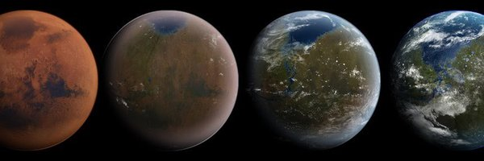

Elon Musk
@elonmusk
Joined June 2009
187 Following
133.3M Followers
Tweets
Replies
Media
Likes
Replying to @ashleevance
You could literally film a Walking Dead episode unedited in downtown SF.
This is where San Francisco politics leads and Twitter was exporting this self-destructive mind virus to the world.
With some exceptions, other tech companies are still doing so.
Evil in guise of good.
Replying to @ashleevance
You could literally film a Walking Dead episode unedited in downtown SF.
This is where San Francisco politics leads and Twitter was exporting this self-destructive mind virus to the world.
With some exceptions, other tech companies are still doing so.
Evil in guise of good.